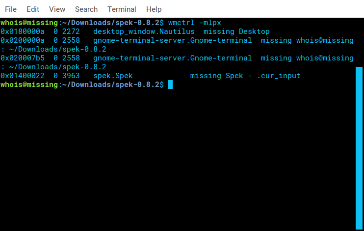
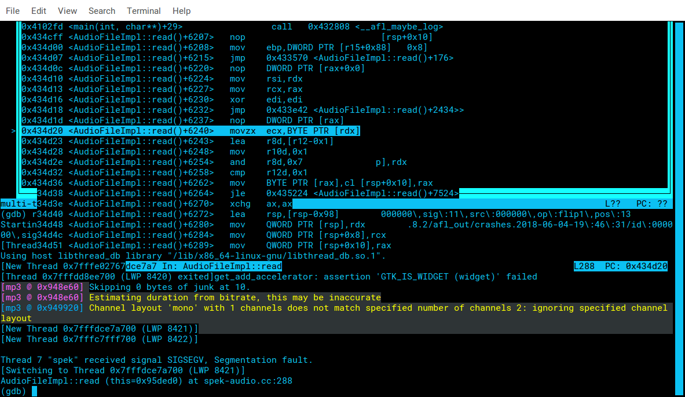
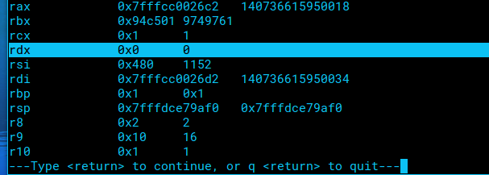

I thought I would try my hand at fuzzing a GUI application. Hopefully, you can take something away from my experience below.
Tested on Ubuntu Xenial
Downloaded the src tarball from here
Installed dependencies
libwxgtk2.8-0 and libwxgtk2.8-dev available from PPA
add-apt-repository ppa:nilarimagard/webupd8 && apt-get update
Getting the binary to compile was a major pain with getting the right dependencies.
You can find the debs from here
Because spek is a GUI application, some adaptations needed to be made to use with AFL.
There are a few options:
Fingerprint the application id with wmctrl -mlpx to use for the script.

#!/bin/bash
while true; do
sleep 1
wmctrl -ic 0x01400022
done
Note: One Test per second is really slow for fuzzing purposes, so modifying the source to exit when available is better.
Using a sample audio file from https://www.sample-videos.com/download-sample-audio.php as the initial test input
AFL was run with the below command:
afl-fuzz -i afl_in -o afl_out -m 1000 -t 10000+ src/spek @@


Three crashes were recorded.
The crashes occured at movzx ecx, BYTE PTR [rdx]
Using gdb to analyze, the values of the registers showed:

In simple terms, this is a load / read from memory. The value of rdx reflects 0x0, demonstrating a read from memory at address 0x0, effectively a NULL pointer dereference.
By performing a diff on the sample input and mutated input, it was found that the mp3 frame headers were corrupted. There are disallowed combinations of bitrate and mode in the file format that when the bits of those values are flipped, will result in a crash.